Application
Let's take an example page in the repo bahmutov/cypress-assertion-example. It has a list with a few items.
1 | <html> |
We can confirm that the list element has the ID attribute equal to "data-attributes".
1 | describe('list', () => { |
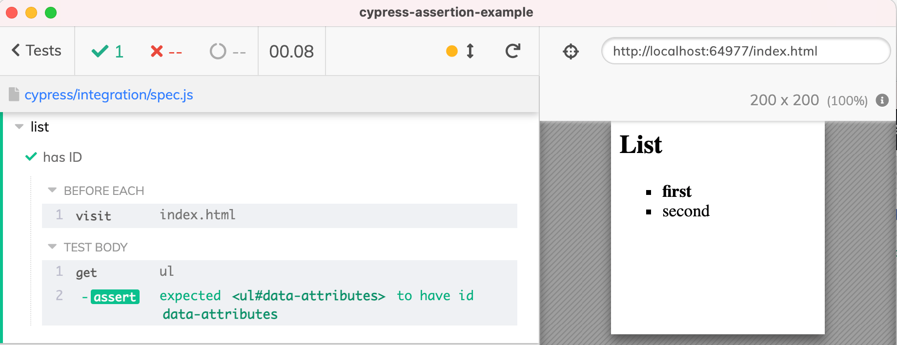
We can also confirm other properties, like the list style CSS.
1 | it('has ID', () => { |
Both assertions .should('have.id', 'data-attributes') and .and('have.css', 'list-style', 'outside none square') refer to the same <UL> element yielded by the previous cy.get('ul') command. We can hover over the assertions to confirm this - Cypress shows the DOM snapshot at that moment and highlights the current element.
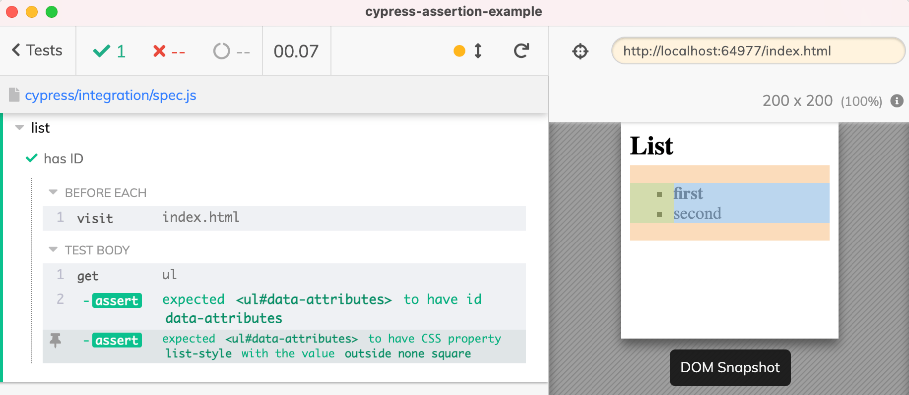
have.attr gotcha
Now let's write a test to confirm the properties of the first <LI> element.
1 | context('item', () => { |
The test passes - we do have an <LI> element with text "first" with the data attribute "data-test-id=first" and a bold font.
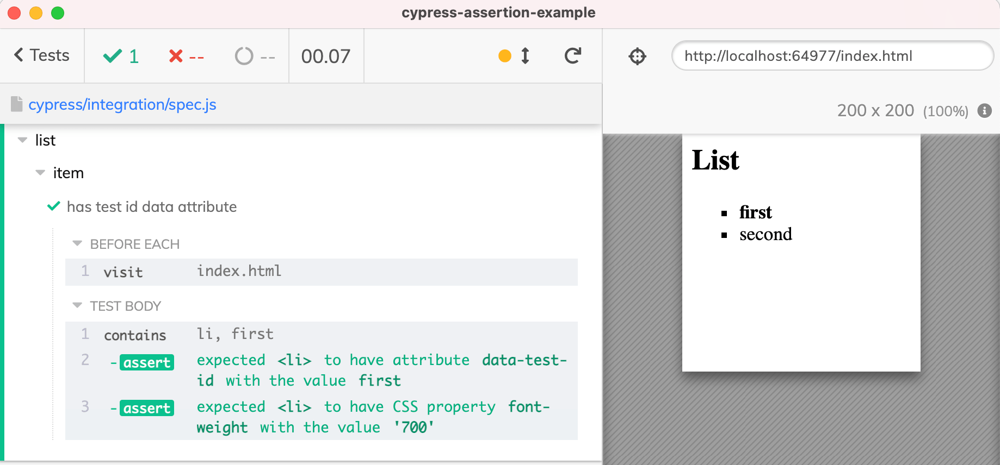
Great, but what if we do not know the expected data-test-id value? We can change the .should('have.attr', 'data-test-id', 'first') and remove the last argument to only confirm tha the element has a data-test-id attribute, with any value.
1 | context('item', () => { |
Suddenly, the test fails.
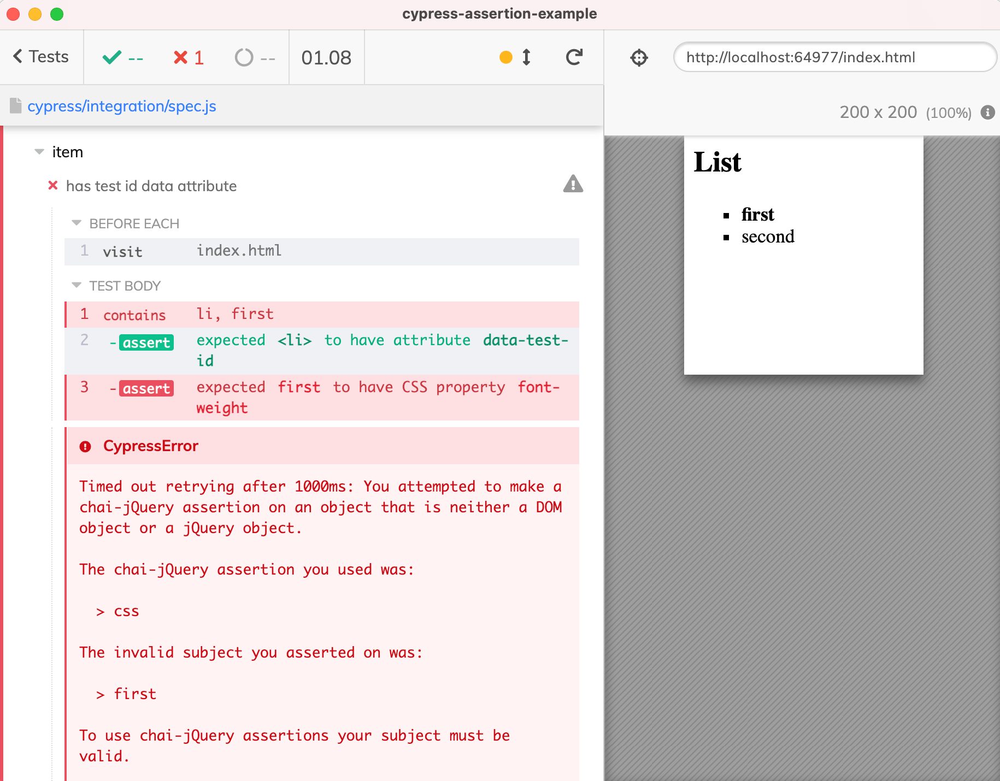
The error message explains that the "have.css" assertion expected an element, but instead received "first" subject. What is this about?
Typically, all Cypress assertions (which are Chai + Chai-jQuery + Chai-Sinon) keep the original subject. This makes it easy to chain multiple assertions to the same subject to confirm all its properties.
1 | cy.get('ul') |
The assertion .should('have.attr', 'data-test-id', 'first') that confirms the value is the same way. BUT if you remove the expected value and use the single argument version "have.attr data-test-id" form, then the assertion changes the subject and yields the attribute's value. Only very few assertions change the subject like this, assertions like "have.prop", "have.attr". The reasoning being that IF you do not know the expected value, you probably want to validate the value down the line. For example, you can check if the attribute is a lowercase string.
1 | cy.contains('li', 'first') |
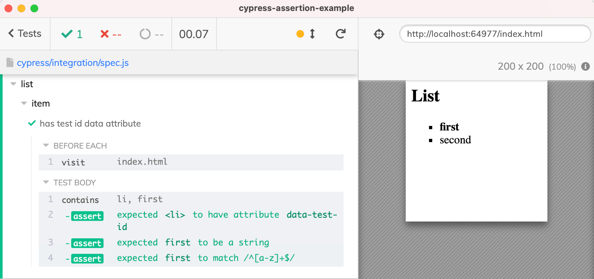
Workarounds
In our original case we have multiple assertions that need the original element. You can get the element again:
1 | it('has some test id data attribute', () => { |
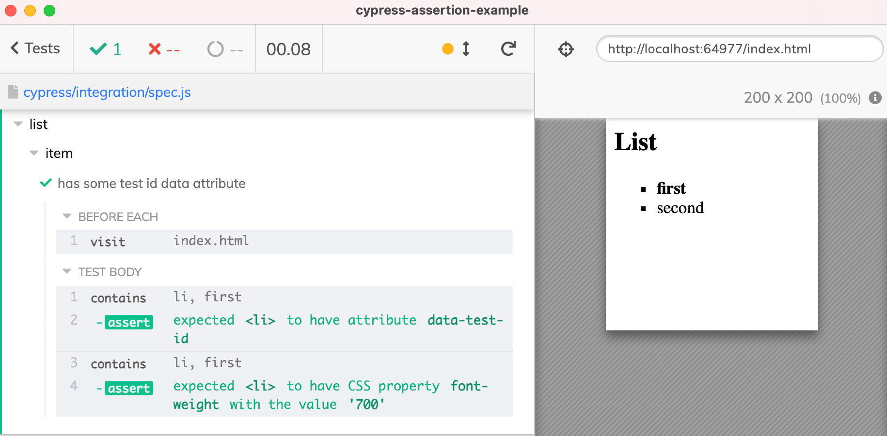
The above test splits the commands, which might go against the retry-ability best practices. Thus I would use .should(callback) to write this test
1 | it('has some test id and CSS', () => { |
Custom assertion
Finally, another solution is to write your own assertion for clarity, and it is much simpler than it seems. In the support file, call the global function chai to extend the assertions
1 | chai.use((_chai) => { |
Let's call our assertion "testId" and it will check if the given subject has "data-test-id" attribute. If the assertion call gives a value, then our assertion should check if the "data-test-id" attribute has that exact value. Here is the complete code:
1 | chai.use((_chai) => { |
The support file is loaded before each spec file, thus the assertion "testId" is available in every spec file automatically.
1 | it('has some test id and CSS using custom assertion', () => { |
We called our assertion using .should('have.testId') command. Since we did not pass a value, the test passed because the attribute "data-test-id" was present on the element.
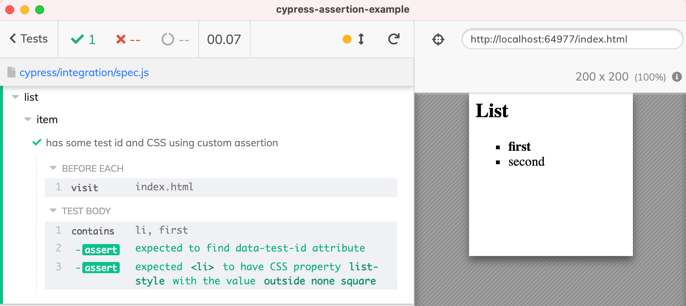
Let's confirm the value of the "data-test-id" attribute. First, let's try using a wrong expected value to see how the error message looks.
1 | cy.contains('li', 'first') |
The test fails with a useful error message, notice the second attached assertion did not even run - because the first assertion "have.testId" never passed.
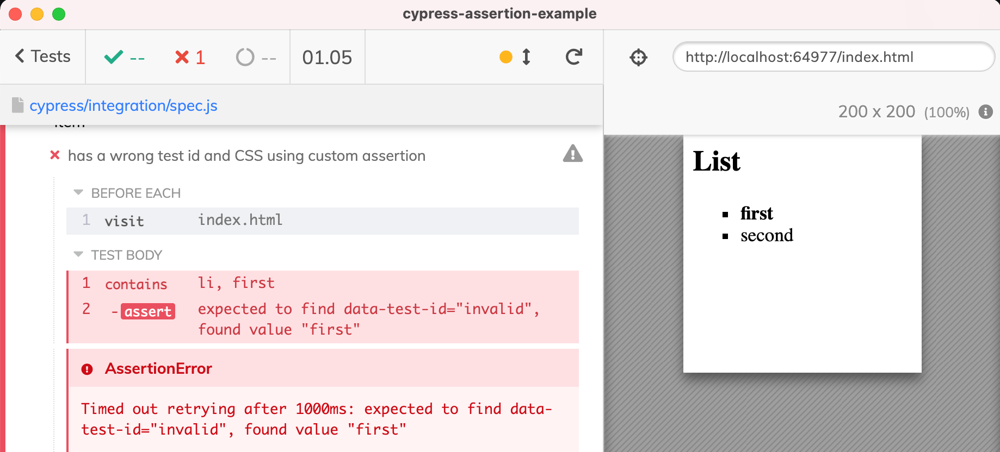
Fix the expected value in the test and watch the test succeed.
1 | it('has the expected test id and CSS using custom assertion', () => { |
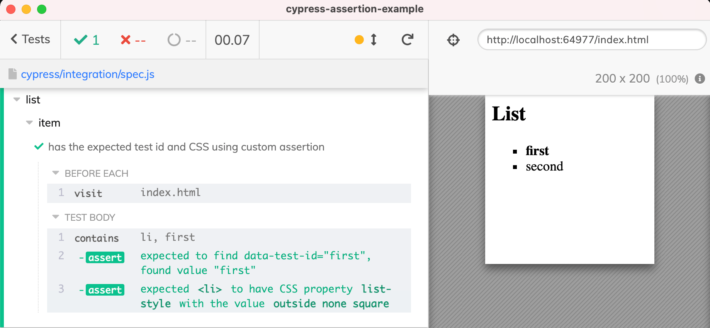
Types
Cypress comes with TypeScript types, and even the JavaScript specs show intelligent code completion for the built-in assertions, like "have.attr"
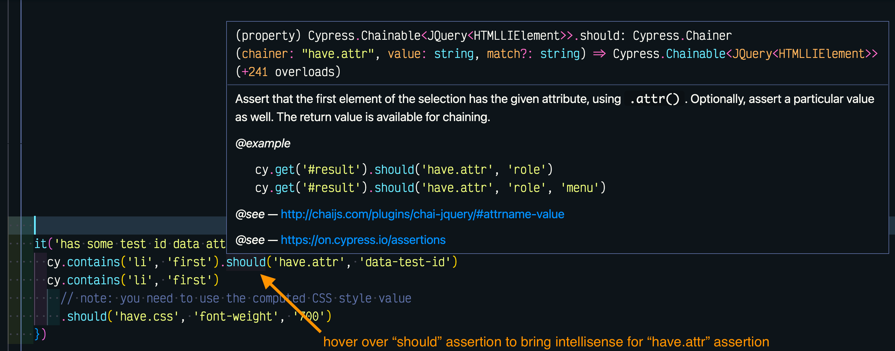
But the new custom assertion has no documentation, and VSCode complains that it is unknown.
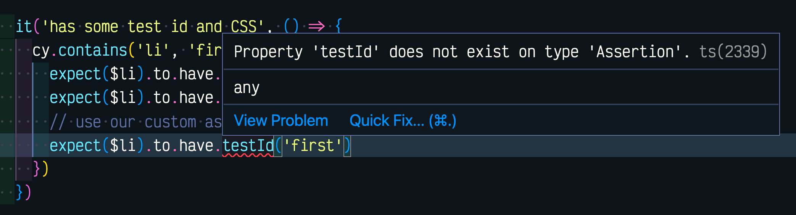
To solve this problem, add index.d.ts file to the cypress folder and describe the new assertion.
1 | /// <reference types="cypress" /> |
Tell the spec files (using tsconfig.json or jsconfig.json or via reference path) to load the cypress/index.d.ts file and enjoy the intelligent code completion in your custom assertions.
1 | /// <reference path="../index.d.ts" /> |
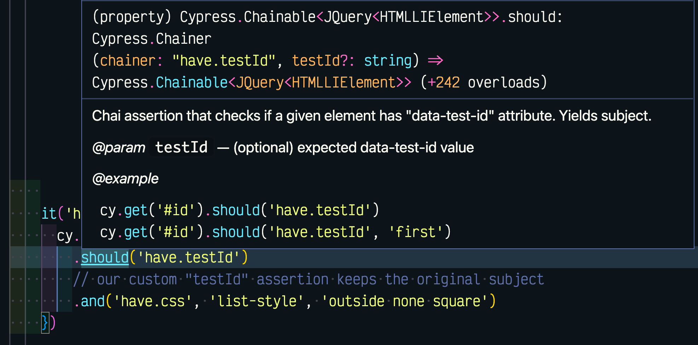